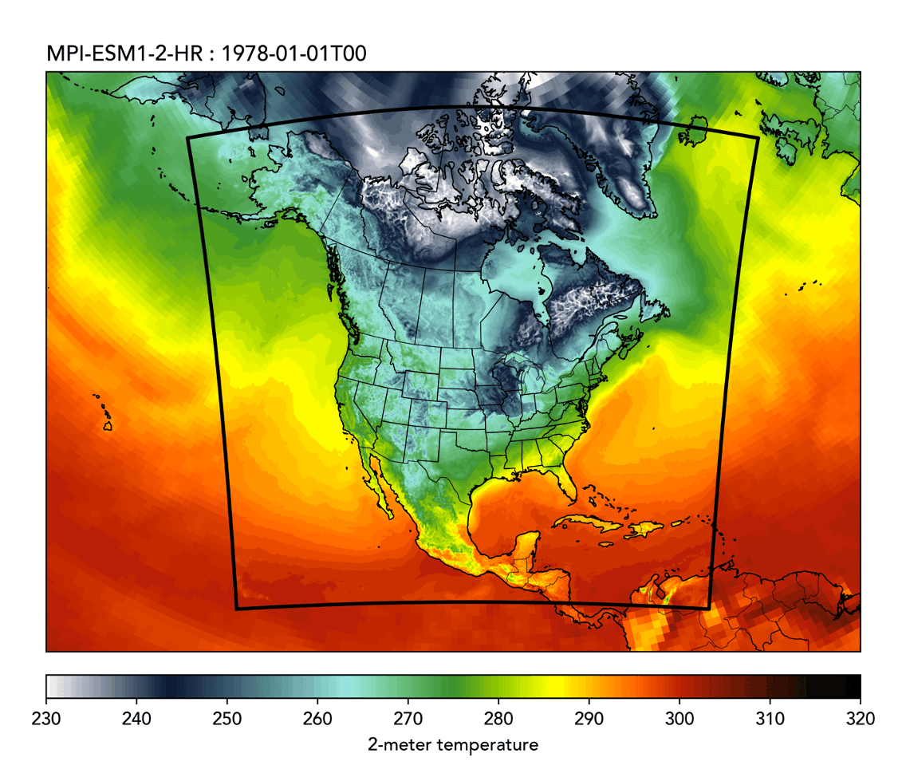

Summary
Global climate models capture large-scale patterns but lack the spatial detail needed for local decision-making about infrastructure, water resources, and extreme events. Regional climate models bridge this gap by downscaling global projections to resolve critical features like mountains, coastlines, and land-atmosphere interactions.
We're expanding NA-CORDEX by downscaling CMIP6 models to 12 km resolution over North America. These high-resolution simulations better capture localized extremes and topographic influences. All data will be openly available and analysis-ready, supporting both research and climate adaptation planning.
